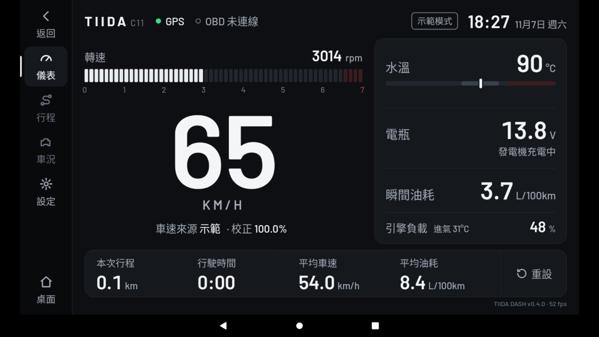
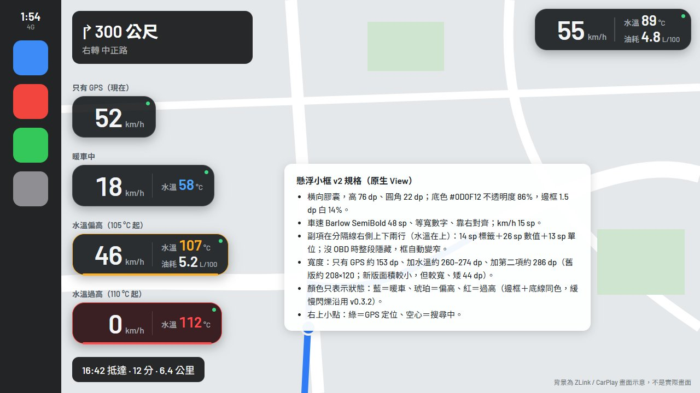
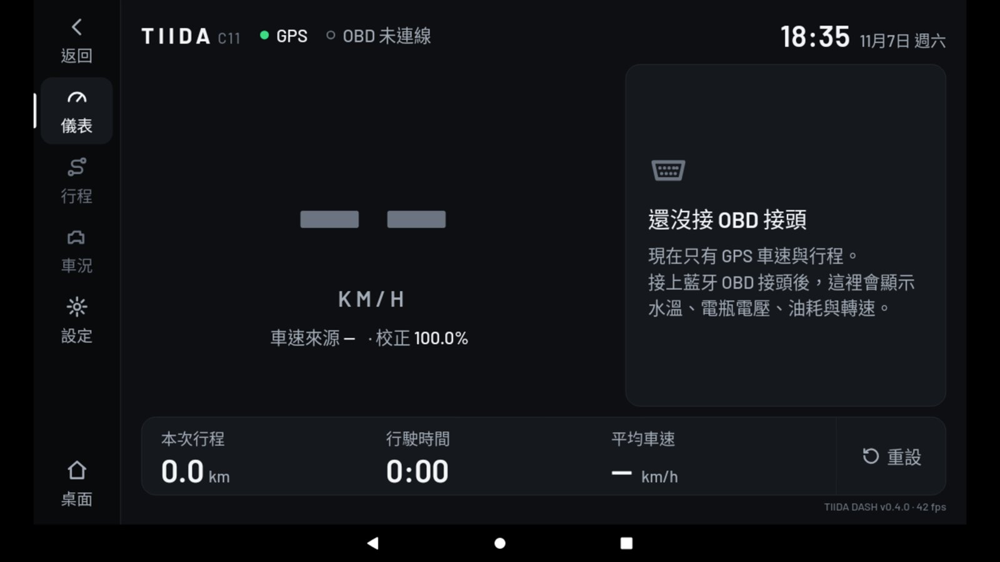
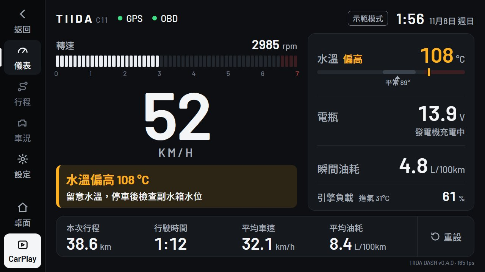
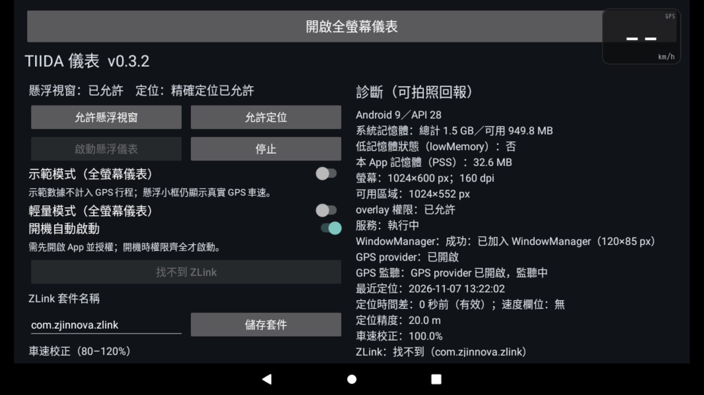
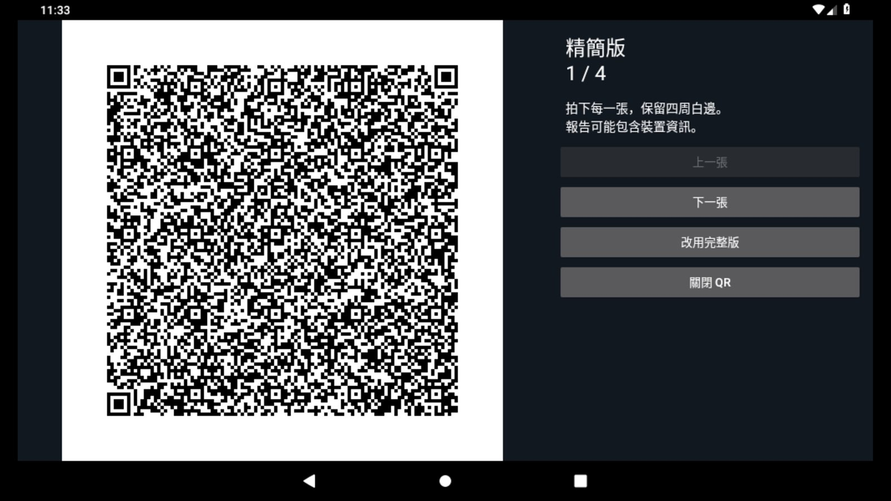

給 2010 Tiida 的自製儀表
原廠儀表看不到的數字，放到中控螢幕上：開導航時，一個小框疊在 CarPlay 角落顯示車速；停車時，打開全螢幕儀表看轉速、水溫、電壓和行程。全部是裝在車機上的 App，原本的系統和 CarPlay 都不動。

從一則 Threads 開始
這個專案照著 @johnnp 的〈E91 儀表．開發紀錄〉的三個步驟做。原作者在 BMW E91 的 KSW 車機上做了新儀表；這裡換成 Nissan Tiida 和 JHY 車機，每一步都依車子重新設計。畫面從 v0.4 起也換成自己的設計，見下一節。
先探測車機
不知道車機讀得到什麼，就先寫一個 App 把系統資訊全部列出來。存不了檔就切成 QR 碼，用手機拍下來再在電腦解碼。
App 完成，等車機實測接上 OBD
轉速、水溫、油耗要靠 OBD 接頭。車機用無線 CarPlay，Wi-Fi 被佔著，所以只考慮藍牙或 USB 版；型號等探測結果再決定。
尚未購買設計新儀表
開車時大多開著 CarPlay，所以主角改成疊在 ZLink 上的懸浮小框；全螢幕儀表留給停車和暖車。
懸浮小框與全螢幕儀表完成照車用規範重新設計
第一版畫面沿用了原作者的樣子：橘色轉速錶、直式 LED 時鐘。v0.4 全部重畫，改依車用介面的公開規範決定字多大、按鈕多大、什麼時候該有顏色。
顏色只代表狀態
平常全是白和灰，數值正常就不加「正常」標籤。只有需要注意時才出現顏色，意思和車上的指示燈一樣。
字和按鈕的大小有下限
主要數字至少 32 dp、次要文字 24 dp、可點的地方至少 76×76 dp，再換算成車機 1024×600 螢幕的實際大小。
依據：Android for Cars 視覺原則畫面
標「實際畫面」的是 App 在 Android 模擬器上的截圖；標「原型」的是設計稿，背景的 CarPlay 是示意圖。





做了什麼
兩個 App：Tiida Probe 只跑一次，用來了解車機；Tiida Dashboard 是每天用的儀表。
懸浮小框完成
原生小元件，每秒更新 4 次；橫向膠囊只佔地圖角落一條。框以外的觸控照樣傳給 CarPlay；長按隱藏 5 分鐘。
全螢幕儀表完成
大字車速、分段轉速條、水溫刻度與車況清單、行程列。用 WebView 顯示，程式與樣式都限制在車機舊版 Chrome 74 能跑的範圍。
GPS 行程完成
本次里程、行駛時間、平均車速；過濾 GPS 跳點，重開 App 不歸零。
為 2GB 車機減重完成
切回 CarPlay 時全螢幕儀表直接釋放；輕量模式降低更新頻率；診斷區顯示實際記憶體用量。
OBD 引擎數據規劃中
轉速、水溫、進氣量算油耗、電瓶電壓、故障碼。連線後先問車子支援哪些項目，只顯示真的有的。
水溫異常提醒畫面完成，等 OBD
Tiida 沒有冷卻水水位感知器。改成學習平常的水溫，偏高、忽高忽低或暖車變慢時提醒去看副水箱。
資料怎麼流
整個 App 只有一個 GPS 監聽，由前景服務持有；切去 CarPlay 時資料照樣在收。虛線是之後才會接上的來源。
兩個 AI 一起做
這個專案由 Claude 和 Codex 分工完成，每一步都留下紀錄。原作者是在網頁版 Claude 上一路對話開發；這裡多了一個實作者和一道獨立審查。
Claude 規劃設計、做畫面原型、寫任務單。
Codex 照任務單實作，只改檔案。
Claude 審 diff，再啟動一個沒有前情的獨立 Claude 做第二次審查。
GitHub Actions 編譯、簽章，在模擬器的 1024×600 與 1280×720 上實際開啟 App、截圖、檢查版面。
截圖會說話。改版後的模擬器截圖顯示：GPS 還沒定位時，大字的「--」黏成一條白色粗槓，看起來像畫面壞了。原因是字型會把兩個連字號合成一條長槓，而車機那種舊版瀏覽器核心不會自動取消。測試和電腦預覽都沒抓到，是看模擬器截圖才發現，關掉連字、改成灰色短槓後才放行。
進度
不需要車子就能做的部分都完成了，下一步是上車實測。
| 項目 | 狀態 | 說明 |
|---|---|---|
| 探測 App 0.1.2 | 完成 | 系統、螢幕、WebView、廠商服務、藍牙、定位、記憶體、CPU；存檔或 QR 匯出。 |
| 儀表 App 0.4.0 | 完成 | 新版畫面、懸浮小框、全螢幕儀表、GPS 行程、示範與輕量模式。 |
| 車機實測 | 進行中 | 懸浮框能否疊在 ZLink 上、2GB 記憶體夠不夠、探測報告。 |
| OBD 數據 | 未開始 | 等探測結果決定接頭型號。 |
| 水溫異常提醒 | 畫面完成 | 提醒的版面已做好，需要 OBD 的水溫資料才會動。 |